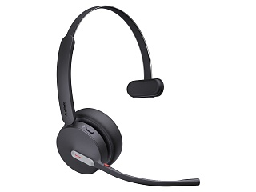

Yealink BH70 Mono UC USB-C/A
Цена носит информационный характер — актуальную стоимость и наличие уточняйте у менеджера.
Беспроводная универсальная Bluetooth-гарнитура Yealink серии BH70 подходит как для использования в офисе, так и для удаленной работы из дома. Технология шумоподавления на базе 3 микрофонов эффективно снижает фоновый шум, обеспечивая бесперебойную связь. Благодаря безупречному качеству воспроизведения звука, продолжительному времени автономной работы и простоте использования BH70 станет незаменимым устройством в повседневной работе.
Технология шумоподавления на базе 3 микрофонов
Фирменная технология шумоподавления Yealink Acoustic Shield автоматически блокирует фоновый шум, предоставляя пользователю высокое качество звука и четкую передачу голоса. Эта передовая технология значительно повышает эффективность общения.
Комфорт при ношении в течение всего дня
Разработанные с учетом эргономических стандартов на основе обширных исследований, гарнитуры Yealink BH70 гарантируют комфорт при длительном ношении в течение всего дня. Учитывая особенности анатомического строения человеческой головы, гарнитуры BH70 отличаются облегченной конструкцией. Качественные материалы, применяемые при изготовлении этих гарнитур, обуславливают их долговечность и прочность.
Высококачественный звук
BH70 также обладает отличными возможностями для качественного воспроизведения музыки. Гарнитура передает насыщенные басы, детальные средние тональности и кристально четкие высокие частоты. Динамический эквалайзер адаптируется к различным музыкальным жанрам, подчеркивая уникальные характеристики каждого трека и обеспечивая приятное прослушивание музыки различных стилей.
Время автономной работы и световой индикатор занятости
Yealink BH70 рассчитана на активную работу в режиме разговора до 35 часов, позволяя пользователю оставаться на связи в течение длительного времени без необходимости подзарядки.
Гарнитура имеет световые индикаторы занятости, которые автоматически светятся красным при осуществлении голосовых вызовов или во время участия в конференции, показывая занятость сотрудника и оптимизируя коммуникацию в офисе.
Гарантийный срок — 2 года.
Характеристики
Возможности
- Световой индикатор статуса на гарнитуре
- Легкозаменяемые амбушюры
- Подвижный микрофон
Основные характеристики
- Цвет: черный
Микрофон
- Чувствительность микрофона: -14 Дб
- Диапазон частот микрофона: 100 Гц-8000 Гц
Звук
- Защита слуха: EN50332
- Технология Acoustic Shield
- Диаметр динамика: 35 мм
- Чувствительность динамика: 117 дБ при 1 МВт-1 кГц
- Максимальная входная мощность динамика: 30 МВт
- Диапазон частот динамиков: 20 Гц-20 кГц
Функции управления
- Подключение (к ПК и мобильным устройствам): кабель USB Type-C, Bluetooth-адаптер, Bluetooth
- Версия Bluetooth: Bluetooth 5.2
- Профили Bluetooth: HSP v1.2, HFP v1.7, A2DP v1.3, AVRCP v1.6, PBAP v1.1, SPP v1.2
- Рабочий диапазон: до 30 м
- Количество сохраненных сопряжений по Bluetooth: до 8 устройств
- Одновременное подключение по Bluetooth: до 2 устройств
Батарея
- Время работы в режиме разговора: до 35 ч (с выключенным индикатором занятости), до 28 ч (с включенным индикатором занятости)
- Время воспроизведения музыки: до 43 ч
- Время работы в режиме ожидания: до 528 ч
- Время зарядки: 1,5 ч